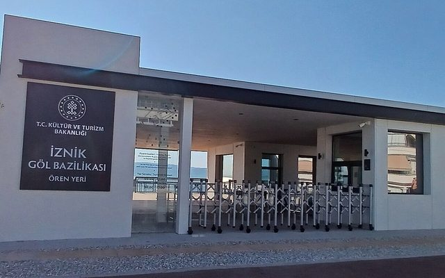

Bizancio y el cristianismo primitivo. De Constantinopla a Capadocia y de Trebisonda a Chipre, el legado bizantino de iglesias, mosaicos y monasterios está por toda Anatolia. En el 330 el emperador Constantino trasladó la capital a Bizancio y la refundó como Constantinopla. El Imperio romano de Oriente, o bizantino, duró más de mil años y terminó con la conquista otomana de la ciudad en 1453. Santa Sofía, construida bajo Justiniano en el siglo VI, es un hito de la arquitectura universal por su enorme cúpula; los mosaicos del Gran Palacio y de las iglesias de Cora y Pammakaristos (Fethiye) muestran la cumbre de este arte en Estambul. Anatolia fue una de las primeras tierras donde se difundió el cristianismo. La iglesia de San Pedro en Antakya se considera una de las iglesias más antiguas conocidas; Tarso guarda huellas de San Pablo, Éfeso de San Juan, Demre de San Nicolás y Silifke de Santa Tecla. El primer concilio ecuménico, celebrado en Nicea (İznik) en el 325, fue un acontecimiento fundacional del cristianismo. El monasterio de Sumela en Trebisonda, el de Alahan en Mersin, Dara en Mardin y el monasterio de San Bernabé en Chipre muestran la amplitud del mundo bizantino, mientras Ani en Kars y Akdamar en Van son obras maestras de la arquitectura armenia de la misma época.
De Constantinopla a Capadocia y de Trebisonda a Chipre, el legado bizantino de iglesias, mosaicos y monasterios está por toda Anatolia.
En el 330 el emperador Constantino trasladó la capital a Bizancio y la refundó como Constantinopla. El Imperio romano de Oriente, o bizantino, duró más de mil años y terminó con la conquista otomana de la ciudad en 1453. Santa Sofía, construida bajo Justiniano en el siglo VI, es un hito de la arquitectura universal por su enorme cúpula; los mosaicos del Gran Palacio y de las iglesias de Cora y Pammakaristos (Fethiye) muestran la cumbre de este arte en Estambul.
Anatolia fue una de las primeras tierras donde se difundió el cristianismo. La iglesia de San Pedro en Antakya se considera una de las iglesias más antiguas conocidas; Tarso guarda huellas de San Pablo, Éfeso de San Juan, Demre de San Nicolás y Silifke de Santa Tecla. El primer concilio ecuménico, celebrado en Nicea (İznik) en el 325, fue un acontecimiento fundacional del cristianismo.
El monasterio de Sumela en Trebisonda, el de Alahan en Mersin, Dara en Mardin y el monasterio de San Bernabé en Chipre muestran la amplitud del mundo bizantino, mientras Ani en Kars y Akdamar en Van son obras maestras de la arquitectura armenia de la misma época.
Dónde ver esta época
 Museo de Historia y Experiencia de Santa SofíaEstambul
Museo de Historia y Experiencia de Santa SofíaEstambul Museo de los Mosaicos del Gran PalacioEstambul
Museo de los Mosaicos del Gran PalacioEstambul Museo FethiyeEstambul
Museo FethiyeEstambul Torre de la DoncellaEstambul
Torre de la DoncellaEstambul
Basílica del Lago de İznikBursa Basílica de San Juan (Ayasuluk)Izmir
Basílica de San Juan (Ayasuluk)Izmir Museo Monumento de San NicolásAntalya
Museo Monumento de San NicolásAntalya Museo Monumento de San PedroHatay
Museo Monumento de San PedroHatay Pozo de San Pablo (Tarso)Mersin
Pozo de San Pablo (Tarso)Mersin Yacimiento de Ayatekla (Silifke)Mersin
Yacimiento de Ayatekla (Silifke)Mersin Monasterio de AlahanMersin
Monasterio de AlahanMersin Monasterio de SumelaTrebisonda
Monasterio de SumelaTrebisonda Iglesia de Santa Ana (Pequeña Ayvasıl)Trebisonda
Iglesia de Santa Ana (Pequeña Ayvasıl)Trebisonda Yacimiento de AniKars
Yacimiento de AniKars Museo Monumento de AkdamarVan
Museo Monumento de AkdamarVan Yacimiento de DaraMardin
Yacimiento de DaraMardin Monasterio de San BernabéGazimağusa (Famagusta)
Monasterio de San BernabéGazimağusa (Famagusta)🎓 Pon a prueba lo aprendido
1. ¿En qué año se refundó Constantinopla como capital?
2. ¿Bajo qué emperador se construyó Santa Sofía?
3. ¿Dónde se celebró en el 325 el primer concilio ecuménico?
4. ¿Qué monasterio se aferra a un acantilado en Trebisonda?